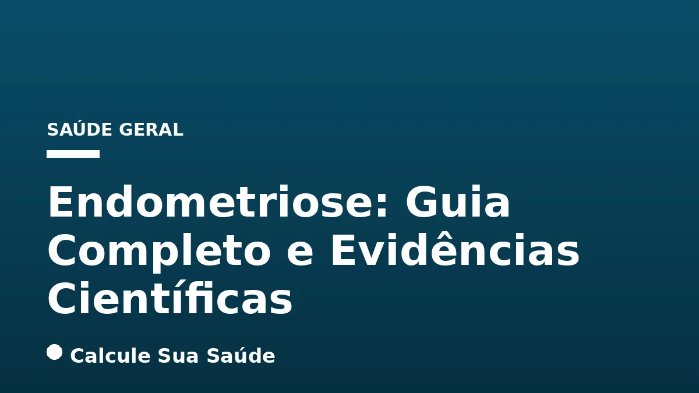

Aviso médico importante
Este conteúdo é educativo e informativo e não substitui a consulta, o diagnóstico ou o tratamento de um profissional de saúde. Em caso de sintomas, procure orientação médica.
Índice do Artigo
- 1. O Que é Endometriose? Compreendendo a Doença Crônica
- 2. As Hipóteses por Trás da Endometriose: Um Enigma Científico
- 3. Fatores de Risco para o Desenvolvimento da Endometriose
- 4. Sintomas da Endometriose: Um Espectro de Manifestações Clínicas
- 5. O Desafio do Diagnóstico: Caminhos para a Confirmação
- 6. Endometriose no Brasil: Um Panorama Epidemiológico e Social
- 7. Abordagens Terapêuticas: Tratamento Individualizado e Baseado em Evidências
- 8. Tratamento Medicamentoso: Gerenciando a Endometriose com Terapia Hormonal e Analgésicos
- 9. Intervenção Cirúrgica: Quando a Precisão Anatômica é Essencial
- 10. Terapias Complementares e Mudanças no Estilo de Vida: Um Suporte Integral
- 11. Prevenção da Endometriose: Estratégias Atuais e Futuras
- 12. Desvendando Mitos e Verdades sobre a Endometriose
- 13. Endometriose e Fertilidade: Desafios e Possibilidades
- 14. A Importância do Acompanhamento Multidisciplinar e da Conscientização
- 15. Perguntas frequentes
A endometriose é uma condição crônica e complexa que afeta milhões de mulheres em idade reprodutiva em todo o mundo, caracterizada pelo crescimento de tecido semelhante ao endométrio fora da cavidade uterina. Este tecido ectópico, que normalmente reveste o útero, responde aos hormônios femininos, especialmente ao estrogênio, resultando em inflamação, dor e, em muitos casos, comprometimento da fertilidade. A Organização Mundial da Saúde (OMS) estima que cerca de 10% das mulheres em idade reprodutiva sejam afetadas, totalizando aproximadamente 190 milhões de indivíduos globalmente.
No Brasil, a prevalência da endometriose é igualmente significativa, atingindo entre 5% e 15% das mulheres em idade reprodutiva, o que representa cerca de 8 milhões de brasileiras. Apesar de sua alta incidência e do impacto devastador na qualidade de vida, o diagnóstico da endometriose permanece um desafio, com um atraso médio de sete anos entre o início dos sintomas e a confirmação da doença. Essa demora pode levar ao agravamento dos sintomas e à progressão da condição, tornando o tratamento mais complexo.
Este artigo visa desmistificar a endometriose, oferecendo um panorama aprofundado e baseado em evidências científicas sobre suas causas, fatores de risco, sintomas, métodos diagnósticos e as abordagens terapêuticas mais eficazes. Nosso objetivo é capacitar mulheres, familiares e profissionais de saúde com informações precisas, promovendo o reconhecimento precoce e o manejo adequado dessa condição que exige atenção e cuidado multidisciplinar.
Em resumo
- A endometriose é uma doença crônica onde tecido semelhante ao endométrio cresce fora do útero, causando inflamação e dor.
- Afeta cerca de 10% das mulheres em idade reprodutiva globalmente, com 8 milhões de brasileiras estimadas com a condição.
- Os principais sintomas incluem dor pélvica intensa (dismenorreia, dispareunia), infertilidade e queixas intestinais/urinárias cíclicas.
- O diagnóstico é desafiador, com um atraso médio de sete anos, e pode exigir laparoscopia para confirmação definitiva.
- O tratamento é individualizado e visa controlar os sintomas, podendo incluir terapia hormonal, cirurgia e abordagens complementares.
- A gravidez não cura a endometriose, e dor menstrual intensa não é normal, exigindo sempre avaliação médica.
1. O Que é Endometriose? Compreendendo a Doença Crônica
A endometriose é uma doença crônica e inflamatória, estrogênio-dependente, caracterizada pelo crescimento de tecido semelhante ao endométrio – o revestimento interno do útero – fora da cavidade uterina. Diferente do endométrio normal, que é expelido durante a menstruação, esse tecido ectópico não tem para onde ir, resultando em inflamação crônica, formação de aderências e dor. As lesões podem variar em tamanho e profundidade, desde pequenos implantes superficiais até grandes cistos.
As localizações mais comuns para essas lesões incluem os ovários, as trompas de Falópio e o peritônio pélvico. No entanto, a endometriose pode ser encontrada em uma vasta gama de órgãos, como bexiga, intestino, apêndice, diafragma e até mesmo em locais mais raros como pulmões, vagina, vulva, nariz ou pele. Quando a doença afeta os ovários, podem surgir cistos preenchidos por sangue escuro, conhecidos como endometriomas, que são uma forma comum e muitas vezes dolorosa da condição.
A prevalência da endometriose é globalmente significativa. A Organização Mundial da Saúde (OMS) estima que a doença afete aproximadamente 10% das mulheres em idade reprodutiva em todo o mundo, o que corresponde a cerca de 190 milhões de indivíduos. No Brasil, a situação não é diferente, com estimativas apontando que entre 5% e 15% das mulheres em idade reprodutiva são acometidas, totalizando cerca de 8 milhões de brasileiras. Em serviços especializados, a prevalência pode ser ainda maior, chegando a 34,2% entre mulheres sintomáticas, o que sublinha a necessidade de maior conscientização e acesso ao diagnóstico.
2. As Hipóteses por Trás da Endometriose: Um Enigma Científico
As causas exatas da endometriose ainda não são completamente compreendidas pela ciência, o que a torna um campo ativo de pesquisa. No entanto, diversas teorias têm sido propostas para explicar o desenvolvimento dessa condição complexa, envolvendo uma interação de fatores genéticos, hormonais e imunológicos.
A Teoria da Menstruação Retrógrada
Uma das hipóteses mais antigas e amplamente aceitas é a da menstruação retrógrada, proposta por Sampson em 1927. Segundo essa teoria, durante a menstruação, parte do sangue menstrual, que contém células endometriais, flui para trás através das tubas uterinas e se deposita na cavidade abdominal. Essas células, então, se implantariam e cresceriam em locais ectópicos. Contudo, a menstruação retrógrada é um fenômeno comum, ocorrendo em até 90% das mulheres, enquanto a endometriose é menos frequente. Isso sugere que a menstruação retrógrada, por si só, não é suficiente para causar a doença, e que outros fatores são cruciais para a implantação e persistência dessas lesões.
Outras Hipóteses e Fatores Contribuintes
Além da menstruação retrógrada, outras teorias incluem:
- Metaplasia Celômica: Sugere que células do peritônio (o revestimento da cavidade abdominal) podem se transformar em células endometriais.
- Disseminação Linfática ou Vascular: Células endometriais poderiam ser transportadas para locais distantes através dos vasos linfáticos ou sanguíneos, explicando a ocorrência de endometriose em órgãos como pulmões ou cérebro.
- Teoria da Indução: Postula que fatores bioquímicos liberados pelo endométrio ou por outros tecidos induzem a diferenciação de células mesenquimais em tecido endometrial.
- Disfunção Imunológica: O sistema imunológico de mulheres com endometriose pode não ser capaz de reconhecer e eliminar adequadamente as células endometriais ectópicas, permitindo seu crescimento e sobrevivência.
- Fatores Genéticos: A predisposição familiar é um fator de risco conhecido, indicando uma componente genética na suscetibilidade à doença.
- Fatores Hormonais: A dependência de estrogênio das lesões de endometriose é bem estabelecida, e desequilíbrios hormonais podem desempenhar um papel no seu desenvolvimento e progressão.
- Fatores Ambientais: A exposição a certas toxinas ambientais, como a dioxina (um poluente persistente), tem sido investigada como um possível fator contribuinte, embora a evidência ainda esteja em estudo.
É provável que a endometriose seja uma doença multifatorial, resultante de uma combinação complexa dessas diferentes vias, o que dificulta a identificação de uma única causa e, consequentemente, o desenvolvimento de estratégias de prevenção primária.
3. Fatores de Risco para o Desenvolvimento da Endometriose
Embora as causas exatas da endometriose permaneçam um mistério, diversos fatores de risco têm sido identificados, aumentando a probabilidade de uma mulher desenvolver a condição. Compreender esses fatores pode ajudar na identificação precoce e na gestão da saúde feminina.
Principais Fatores de Risco
Os fatores de risco mais consistentemente associados à endometriose incluem:
- Histórico Familiar: Mulheres com mãe ou irmã que possuem endometriose têm um risco significativamente maior de desenvolver a doença, sugerindo uma forte componente genética.
- Menarca Precoce: A primeira menstruação (menarca) antes dos 12 anos de idade está associada a um risco aumentado. Isso pode ser devido a uma maior exposição ao estrogênio ao longo da vida reprodutiva.
- Ciclos Menstruais Curtos: Ciclos com duração inferior a 27 dias podem aumentar o risco, possivelmente devido a um maior número de menstruações ao longo do tempo.
- Períodos Menstruais Intensos e Longos: Menstruações que duram mais de sete dias ou que apresentam fluxo muito intenso podem favorecer a menstruação retrógrada e a implantação de tecido endometrial ectópico.
- Malformações Uterinas: Anormalidades na estrutura do útero podem alterar o fluxo menstrual e predispor ao desenvolvimento da endometriose.
- Nunca Ter Dado à Luz ou Ter o Primeiro Filho Após os 35 Anos: A gravidez e o parto parecem ter um efeito protetor ou de alívio dos sintomas, e a ausência de gestações ou gestações tardias podem estar associadas a um risco maior.
- Baixo Índice de Massa Corporal (IMC): Curiosamente, um IMC baixo tem sido associado a um risco aumentado de endometriose, embora a razão exata não seja totalmente compreendida.
- Prematuridade e Baixo Peso ao Nascer: Estudos sugerem uma ligação entre o nascimento prematuro ou com baixo peso e o risco futuro de endometriose.
- Fatores Ambientais: A exposição a certas toxinas, como a dioxina, um poluente ambiental, tem sido investigada como um possível fator de risco, embora a pesquisa ainda esteja em andamento.
É importante ressaltar que a presença de um ou mais desses fatores de risco não garante o desenvolvimento da endometriose, assim como a ausência deles não exclui a possibilidade da doença. Eles servem como indicadores para uma maior atenção e, se houver sintomas, para a busca de avaliação médica.
4. Sintomas da Endometriose: Um Espectro de Manifestações Clínicas
A endometriose é notória pela sua ampla gama de sintomas, que podem variar de leves a severos e, em alguns casos, ser completamente ausentes. O principal sintoma, e o mais debilitante para muitas mulheres, é a dor pélvica, frequentemente associada aos períodos menstruais. Essa dor pode ser progressiva e piorar com o tempo, impactando significativamente a qualidade de vida.
Dor Pélvica e Dismenorreia
A dismenorreia, ou cólica menstrual intensa, é um dos sinais mais característicos da endometriose. Diferente da cólica menstrual comum, a dor associada à endometriose pode ser incapacitante, não respondendo a analgésicos comuns e exigindo repouso. Além da dor cíclica, muitas mulheres experimentam dor pélvica crônica, que persiste mesmo fora do período menstrual, podendo ser contínua e difusa.
Outros Sintomas Comuns
Os sintomas da endometriose não se limitam à dor menstrual e podem incluir:
- Dispareunia: Dor durante ou após a relação sexual com penetração, que pode ser profunda e persistente, afetando a intimidade e a qualidade de vida.
- Infertilidade ou Dificuldade para Engravidar: A endometriose é uma causa comum de infertilidade, sendo diagnosticada em 25% a 50% das mulheres com subfertilidade. As lesões podem distorcer a anatomia pélvica, afetar a qualidade dos óvulos ou a receptividade endometrial.
- Queixas Intestinais e Urinárias Cíclicas: Quando a endometriose afeta o intestino ou a bexiga, sintomas como dor ao defecar (disquesia) ou urinar (disúria) podem surgir, especialmente durante a menstruação. Outras queixas incluem constipação, diarreia ou sangramento retal cíclico. Para mais informações sobre problemas intestinais, consulte nosso artigo sobre Constipação Intestinal: Causas, Diagnóstico e Tratamento.
- Sangramento Excessivo: Períodos menstruais intensos (menorragia) ou sangramento entre os períodos (spotting) são sintomas que podem indicar a presença da doença.
- Inchaço Abdominal e Náuseas: Muitas mulheres relatam sensação de inchaço, distensão abdominal e náuseas, especialmente durante os períodos de dor intensa.
- Fadiga e Cansaço Excessivo: A dor crônica, a inflamação e a privação de sono podem levar à fadiga persistente, impactando a energia e o bem-estar geral.
É crucial enfatizar que sentir dor menstrual intensa e incapacitante não é normal. Muitas mulheres são ensinadas a normalizar essa dor, o que contribui para o atraso no diagnóstico. Qualquer dor pélvica persistente ou que interfira nas atividades diárias deve ser investigada por um profissional de saúde.
5. O Desafio do Diagnóstico: Caminhos para a Confirmação
O diagnóstico da endometriose é frequentemente um processo longo e desafiador, com uma média de sete anos entre o início dos sintomas e a confirmação da doença. Essa demora pode levar ao agravamento da condição e a um impacto significativo na qualidade de vida das pacientes. O processo diagnóstico envolve uma combinação de avaliação clínica e exames complementares.
Avaliação Clínica Detalhada
O primeiro passo é uma anamnese detalhada, onde o médico irá investigar o histórico de sintomas, a intensidade da dor, sua relação com o ciclo menstrual, a presença de dispareunia, queixas intestinais ou urinárias, e o histórico familiar. Um exame físico, incluindo o exame pélvico, pode revelar sensibilidade, nódulos ou massas, embora a ausência desses achados não exclua a doença. A suspeita clínica baseada nos sintomas é fundamental para guiar os próximos passos.
Exames de Imagem
Os exames de imagem desempenham um papel crucial na identificação e mapeamento das lesões de endometriose, especialmente as mais profundas. Os mais recomendados são:
- Ultrassonografia Transvaginal com Preparo Intestinal: Considerada a primeira linha para a avaliação da pelve, este exame, quando realizado por um profissional experiente e com preparo intestinal adequado, pode identificar endometriomas ovarianos, nódulos de endometriose profunda no septo retovaginal, intestino e bexiga.
- Ressonância Magnética (RM) de Pelve com Contraste: Oferece uma visão mais detalhada da extensão da doença, sendo particularmente útil para mapear lesões em locais complexos e para o planejamento cirúrgico.
É importante notar que a maioria dos casos de endometriose superficial não é visível em exames de imagem, o que pode levar a resultados negativos mesmo em pacientes sintomáticas.
Laparoscopia: O Padrão Ouro
Atualmente, a cirurgia por videolaparoscopia é o único método definitivo para confirmar o diagnóstico de endometriose. Durante o procedimento, o cirurgião pode visualizar diretamente as lesões, determinar sua localização, tamanho e extensão, e coletar biópsias para análise histopatológica. A confirmação histopatológica é essencial para o diagnóstico final. Embora seja um procedimento invasivo, a laparoscopia oferece a vantagem de permitir o tratamento das lesões no mesmo ato cirúrgico.
Marcadores Séricos
O uso de marcadores séricos, como o CA-125, para o diagnóstico de endometriose deve ser abandonado. Embora o CA-125 possa estar elevado em alguns casos de endometriose severa, ele não é específico para a doença e pode estar alterado em diversas outras condições benignas ou malignas, tornando-o ineficaz como ferramenta diagnóstica primária.
Devido à complexidade e ao atraso no diagnóstico definitivo, o tratamento pode ser iniciado com base nos sintomas e achados de exames de imagem, mesmo antes da confirmação cirúrgica, especialmente quando o objetivo principal é o alívio da dor.
6. Endometriose no Brasil: Um Panorama Epidemiológico e Social
A endometriose representa um desafio significativo para a saúde pública no Brasil, afetando milhões de mulheres e gerando um impacto substancial nos sistemas de saúde e na qualidade de vida das pacientes. Os dados epidemiológicos revelam a magnitude e as particularidades da doença no contexto brasileiro.
Prevalência e Atraso Diagnóstico
No Brasil, a prevalência da endometriose é estimada entre 5% e 15% das mulheres em idade reprodutiva, o que se traduz em aproximadamente 8 milhões de brasileiras acometidas pela doença. Apesar dessa alta incidência, o atraso no diagnóstico é uma realidade alarmante, com uma média de sete anos entre o início dos sintomas e a confirmação diagnóstica. Essa demora contribui para o agravamento da doença e para a cronicidade da dor, dificultando o manejo e o tratamento.
Internações, Óbitos e Faixa Etária
Entre 2015 e 2025, foram registradas 125.217 internações por endometriose no Brasil, com uma concentração notável na Região Sudeste (42,8%), seguida pelo Nordeste (25,5%) e Sul (17,8%). No mesmo período, foram contabilizados 166 óbitos relacionados à doença, com predominância também na Região Sudeste (47,0%).
A endometriose afeta predominantemente mulheres em idade reprodutiva. As faixas etárias mais acometidas pelas internações foram de 30 a 49 anos, representando 67,7% do total. Outro estudo (2018-2023) corrobora essa tendência, apontando a faixa de 40 a 49 anos como a mais afetada (28.744 casos), seguida por 30 a 39 anos (16.406 casos).
População Afetada e Atendimento no SUS
Em relação à população afetada, dados indicam que a população parda foi a mais acometida (42,7%), seguida pela população branca (36,8%). Esses números ressaltam a necessidade de políticas de saúde que considerem as particularidades demográficas e sociais do país.
O Sistema Único de Saúde (SUS) tem registrado um aumento significativo nos atendimentos relacionados à endometriose. Os atendimentos na Atenção Primária à Saúde (APS) aumentaram aproximadamente 76% em três anos, passando de 82.693 em 2022 para 145.744 em 2024. Esse crescimento pode indicar uma maior conscientização e busca por ajuda, mas também a crescente demanda por serviços de saúde para essa condição.
Endometriose em Emergências
A endometriose é um dos achados ginecológicos mais comuns em atendimentos de emergência, representando 37% dos casos. Isso sublinha a natureza aguda e debilitante das crises de dor que muitas mulheres enfrentam, exigindo intervenção médica imediata e, muitas vezes, internação.
Esses dados reforçam a endometriose como um problema de saúde pública no Brasil, exigindo estratégias abrangentes de diagnóstico precoce, tratamento adequado e suporte contínuo às pacientes.
7. Abordagens Terapêuticas: Tratamento Individualizado e Baseado em Evidências
Atualmente, não existe uma cura definitiva para a endometriose na maioria dos casos, embora a cirurgia definitiva possa levar à cura em situações específicas. O principal objetivo do tratamento é controlar os sintomas, especialmente a dor, e limitar os impactos a longo prazo da doença, como a progressão das lesões e a infertilidade. Dada a complexidade da endometriose e a variabilidade de suas manifestações, o tratamento é sempre individualizado, levando em consideração diversos fatores.
Fatores Determinantes na Escolha do Tratamento
A escolha da abordagem terapêutica mais adequada depende de uma série de considerações, incluindo:
- Intensidade dos Sintomas: A gravidade da dor e o impacto na qualidade de vida são cruciais para definir a agressividade do tratamento.
- Localização e Extensão da Doença: A profundidade e a disseminação das lesões influenciam as opções cirúrgicas e medicamentosas.
- Idade da Paciente: A idade pode influenciar a decisão sobre tratamentos hormonais e a urgência de questões relacionadas à fertilidade.
- Desejo de Engravidar: Este é um fator determinante, pois alguns tratamentos podem afetar a fertilidade, enquanto outros são especificamente direcionados para auxiliar na concepção.
- Resposta a Tratamentos Anteriores: A eficácia de terapias prévias guia a escolha de novas abordagens.
As opções de tratamento podem ser divididas em medicamentosa, cirúrgica e complementar, frequentemente utilizadas em conjunto para otimizar os resultados e proporcionar o maior alívio possível à paciente. É fundamental que a paciente participe ativamente da decisão, em conjunto com sua equipe médica, para garantir que o plano de tratamento esteja alinhado com suas necessidades e objetivos de vida.
8. Tratamento Medicamentoso: Gerenciando a Endometriose com Terapia Hormonal e Analgésicos
O tratamento medicamentoso da endometriose foca principalmente na supressão da atividade hormonal, especialmente do estrogênio, que alimenta o crescimento do tecido endometrial ectópico. Além disso, o manejo da dor é uma componente essencial dessa abordagem.
Terapia Hormonal
A terapia hormonal visa suprimir a ovulação e a produção de estrogênio, o que ajuda a controlar a dor, reduzir o tamanho das lesões e retardar a progressão da doença. As opções incluem:
- Anticoncepcionais Combinados (Estrogênio-Progestágeno): Podem ser usados de forma contínua para suprimir a menstruação, diminuindo a dor e o crescimento das lesões. São uma opção comum e eficaz para muitas mulheres.
- Progestágenos: Medicamentos como medroxiprogesterona, levonorgestrel (disponível em sistemas intrauterinos, como o DIU hormonal) e dienogeste são amplamente utilizados e demonstraram ser eficazes no controle da dor e na redução das lesões. Eles atuam induzindo uma atrofia do tecido endometrial ectópico.
- Análogos de GnRH (Hormônio Liberador de Gonadotrofinas): Esses medicamentos induzem um estado de menopausa temporária, suprimindo a produção de estrogênio pelos ovários. Eles demonstraram evidência de baixa a moderada qualidade para o alívio da dor. O uso pós-operatório por seis meses foi associado a uma menor chance de recidiva da doença. Devido aos efeitos colaterais relacionados à deficiência de estrogênio (como ondas de calor e perda óssea), seu uso é geralmente limitado no tempo e pode ser combinado com terapia de reposição hormonal em baixas doses (add-back therapy) para mitigar esses efeitos.
Medicamentos para Alívio da Dor
Para o controle da dor, são utilizados:
- Analgésicos: Medicamentos como paracetamol podem ser usados para dor leve a moderada.
- Anti-inflamatórios Não Esteroides (AINEs): Ibuprofeno e naproxeno são frequentemente prescritos para aliviar a dor menstrual. No entanto, uma revisão Cochrane relatou evidência inconclusiva de benefício dos AINEs no alívio dos sintomas em comparação com placebo, sugerindo que sua eficácia pode ser limitada em casos de dor intensa associada à endometriose.
É fundamental que a escolha do tratamento medicamentoso seja feita em conjunto com um médico especialista, considerando os benefícios, riscos e efeitos colaterais de cada opção, bem como os objetivos da paciente, como o desejo de engravidar.
9. Intervenção Cirúrgica: Quando a Precisão Anatômica é Essencial
A cirurgia é uma opção de tratamento crucial para a endometriose, especialmente em casos de dor intensa, lesões extensas ou quando a infertilidade é uma preocupação. O objetivo principal da cirurgia é remover o máximo possível de tecido endometrial ectópico e restaurar a anatomia pélvica normal.
Cirurgia Laparoscópica Conservadora
A cirurgia por videolaparoscopia é a técnica preferencial para o tratamento da endometriose. É um procedimento minimamente invasivo que permite ao cirurgião visualizar e remover as lesões de endometriose através de pequenas incisões no abdômen. A remoção das lesões por laparoscopia pode reduzir significativamente a dor e melhorar as chances de concepção em mulheres com infertilidade associada à endometriose.
- Excisão de Lesões: A remoção cirúrgica completa (excisão) das lesões é geralmente preferível à ablação (queimadura superficial), especialmente para endometriomas ovarianos. A excisão da parede do cisto é mais eficaz na redução da dor e prevenção de recorrência do cisto em comparação com a drenagem e ablação, que podem deixar tecido residual.
- Restauração Anatômica: Além da remoção das lesões, a cirurgia visa liberar aderências e restaurar a anatomia normal dos órgãos pélvicos, o que pode ser crucial para a função reprodutiva.
Cirurgia Definitiva (Histerectomia com Ooforectomia)
Em casos de doença grave e disseminada, persistência de sintomas incapacitantes após outras terapias, ou quando a paciente não tem mais desejo de gestação, a cirurgia definitiva pode ser considerada. Esta envolve a histerectomia (remoção do útero), com ou sem ooforectomia (remoção dos ovários).
- Histerectomia com Salpingooforectomia Bilateral: A remoção do útero e de ambos os ovários, juntamente com a excisão de todos os focos de endometriose visíveis, tem mostrado as maiores taxas de cura, chegando a 90% em estudos não controlados. A remoção dos ovários é fundamental para eliminar a principal fonte de estrogênio, que alimenta a doença.
Supressão Hormonal Pré-Cirúrgica
A supressão hormonal pré-cirúrgica com análogos de GnRH pode ser utilizada para diminuir o tamanho dos implantes de endometriose, tornando a cirurgia potencialmente mais fácil. No entanto, não há evidências claras de que essa abordagem reduza a extensão da dissecção cirúrgica, prolongue o tempo sem dor ou aumente as taxas de fertilidade pós-cirúrgicas.
A decisão pela cirurgia deve ser cuidadosamente ponderada, considerando os riscos e benefícios, a extensão da doença e os objetivos de vida da paciente. É fundamental que o procedimento seja realizado por um cirurgião experiente em endometriose para maximizar os resultados e minimizar as complicações.
10. Terapias Complementares e Mudanças no Estilo de Vida: Um Suporte Integral
Além dos tratamentos medicamentosos e cirúrgicos, diversas terapias complementares e mudanças no estilo de vida podem desempenhar um papel importante no manejo da endometriose, ajudando a aliviar os sintomas, melhorar o bem-estar geral e complementar as abordagens médicas tradicionais. É importante ressaltar que essas terapias devem ser vistas como adjuvantes e não como substitutas do tratamento médico convencional.
Atividade Física e Fisioterapia
A prática regular de atividade física, como caminhada, yoga ou pilates, pode ajudar a reduzir a inflamação, aliviar a dor e melhorar o humor. A fisioterapia pélvica, em particular, pode ser muito benéfica para mulheres com dor pélvica crônica e dispareunia, trabalhando na reabilitação dos músculos do assoalho pélvico e na redução da tensão. Para saber mais sobre os benefícios da atividade física, confira nosso artigo sobre Alongamento e Mobilidade: Benefícios e Prática Segura.
Acupuntura e Suporte Psicológico
A acupuntura tem sido explorada como uma opção para o alívio da dor na endometriose, com alguns estudos sugerindo benefícios, embora mais pesquisas sejam necessárias para estabelecer sua eficácia. O suporte psicológico, incluindo terapia cognitivo-comportamental (TCC), é fundamental para lidar com o impacto emocional e psicológico da dor crônica, da infertilidade e da frustração associada à doença. A endometriose pode levar a quadros de depressão e ansiedade, e o acompanhamento profissional pode fazer uma grande diferença.
Dieta Anti-inflamatória e Suplementação
Embora não haja uma dieta específica que cure a endometriose, muitas mulheres relatam melhora dos sintomas com a adoção de uma dieta anti-inflamatória. Essa dieta geralmente enfatiza:
- Alimentos ricos em fibras: Frutas, vegetais, grãos integrais.
- Ômega-3: Presente em peixes gordurosos, sementes de linhaça e chia, com propriedades anti-inflamatórias.
- Redução de alimentos processados: Diminuir o consumo de açúcares refinados, gorduras saturadas e alimentos ultraprocessados.
- Evitar cafeína e álcool: Algumas mulheres relatam melhora ao reduzir esses itens.
A suplementação com vitaminas D, C e E, bem como magnésio e ômega-3, está sendo explorada como estratégia adjuvante, pois esses nutrientes possuem propriedades anti-inflamatórias e antioxidantes que podem ajudar a modular a resposta inflamatória da doença.
Gerenciamento do Estresse
O estresse crônico pode agravar os sintomas da endometriose e intensificar a percepção da dor. Técnicas de gerenciamento do estresse, como meditação, mindfulness, yoga e exercícios de respiração, são importantes para o bem-estar geral e podem contribuir para o alívio dos sintomas. Para entender melhor como o estresse afeta o corpo, veja nosso artigo sobre Ansiedade: Sintomas e Quando Procurar Ajuda.
A integração dessas terapias complementares e mudanças no estilo de vida, sempre com a orientação de profissionais de saúde, pode oferecer um alívio significativo e melhorar a qualidade de vida das mulheres com endometriose.
11. Prevenção da Endometriose: Estratégias Atuais e Futuras
A complexidade das causas da endometriose significa que, atualmente, não existem formas conhecidas de prevenção primária, ou seja, estratégias para evitar que a doença se desenvolva em primeiro lugar. No entanto, a prevenção secundária, que se concentra em retardar a progressão da doença e minimizar seus impactos após o diagnóstico, é uma área importante de atuação.
Ausência de Prevenção Primária
Devido à natureza multifatorial da endometriose, que envolve fatores genéticos, hormonais, imunológicos e ambientais, não há medidas específicas que possam garantir a prevenção do seu surgimento. As teorias sobre suas origens, como a menstruação retrógrada, são fenômenos que ocorrem em muitas mulheres sem que todas desenvolvam a doença, indicando que a predisposição individual é um fator chave.
Estratégias para Reduzir o Risco ou Agravamento
Embora não haja prevenção primária, algumas estratégias podem ajudar a reduzir o risco de desenvolver a doença ou, uma vez diagnosticada, a evitar o agravamento dos sintomas:
- Manter uma Dieta Saudável e Equilibrada: Uma alimentação rica em frutas, legumes, grãos integrais e fibras, e pobre em alimentos processados e gorduras saturadas, pode contribuir para a redução da inflamação sistêmica, que é um componente importante da endometriose.
- Praticar Exercícios Físicos Regularmente: A atividade física regular tem efeitos anti-inflamatórios e pode ajudar a modular os níveis hormonais, potencialmente aliviando os sintomas e reduzindo o risco de progressão.
- Gerenciar o Estresse: O estresse crônico pode exacerbar a inflamação e a percepção da dor. Técnicas de relaxamento e manejo do estresse são benéficas para a saúde geral e podem ter um impacto positivo na endometriose.
- Escolha Adequada de Métodos Contraceptivos: A utilização de métodos contraceptivos hormonais que suprimem a ovulação e reduzem os níveis de estrogênio no organismo pode diminuir a possibilidade de desenvolvimento da doença ou controlar sua progressão em mulheres já diagnosticadas.
A prevenção secundária também passa pelo diagnóstico precoce e pelo tratamento adequado. Quanto antes a endometriose for identificada e manejada, maiores as chances de controlar os sintomas, preservar a fertilidade e melhorar a qualidade de vida da paciente. Por isso, a conscientização sobre os sintomas e a busca por avaliação médica são passos cruciais.
12. Desvendando Mitos e Verdades sobre a Endometriose
A endometriose é cercada por muitos mitos que podem dificultar o diagnóstico e o tratamento adequado. É fundamental desmistificar essas crenças para que as mulheres busquem ajuda e recebam o cuidado necessário. Abaixo, apresentamos alguns dos mitos mais comuns e o que a ciência realmente diz.
| Mito Comum | O Que a Ciência Diz |
|---|---|
| Não há cura para a endometriose. | Embora muitas fontes afirmem que o tratamento visa apenas o controle dos sintomas, a cirurgia definitiva (histerectomia com salpingooforectomia bilateral e excisão de todos os focos) pode levar à cura em alguns casos, com taxas de até 90% em estudos não controlados. No entanto, a cura é mais rara em casos de endometriomas. |
| Toda mulher com endometriose é infértil. | A endometriose pode causar infertilidade, mas não necessariamente. Estima-se que até 50% das mulheres com endometriose tenham dificuldade para engravidar, mas 60% conseguem conceber. Muitos casos não precisam de tratamento para que a mulher engravide, e a infertilidade pode ser revertida com tratamentos específicos. |
| A endometriose pode virar câncer. | Não há uma relação de causalidade direta entre endometriose e câncer. Endometriomas (cistos nos ovários) não são câncer. No entanto, pesquisas recentes identificaram associações entre endometriose e certos tipos de câncer, bem como outras condições autoimunes e cardiovasculares, mas não uma transformação direta. |
| A gravidez cura a endometriose. | A gravidez pode reduzir os sintomas e desconfortos da endometriose devido à redução da exposição ao estrogênio, mas não é um tratamento e não cura a doença. Os sintomas podem retornar após o parto ou o fim da amamentação. |
| Sentir dor menstrual intensa é normal. | Dor menstrual intensa e incapacitante não é normal e pode ser um sinal de endometriose ou outra condição ginecológica. É fundamental buscar avaliação médica para investigar a causa da dor e iniciar o tratamento adequado. |
A disseminação de informações precisas é crucial para combater esses mitos e garantir que as mulheres com endometriose recebam o diagnóstico e o tratamento que merecem.
13. Endometriose e Fertilidade: Desafios e Possibilidades
A relação entre endometriose e infertilidade é uma das preocupações mais significativas para muitas mulheres diagnosticadas com a doença. A endometriose pode afetar a capacidade de engravidar de diversas maneiras, mas é fundamental entender que o diagnóstico não significa uma sentença de infertilidade.
Como a Endometriose Afeta a Fertilidade
A endometriose pode comprometer a fertilidade por vários mecanismos:
- Distorção Anatômica: As aderências e cicatrizes causadas pelas lesões podem distorcer a anatomia pélvica, bloqueando as trompas de Falópio e impedindo o encontro do óvulo com o espermatozoide.
- Inflamação Crônica: A inflamação na cavidade pélvica pode criar um ambiente hostil para a fertilização e a implantação do embrião.
- Qualidade Ovariana: Endometriomas ovarianos podem afetar a reserva ovariana e a qualidade dos óvulos.
- Função Imunológica: Alterações no sistema imunológico podem interferir na implantação do embrião.
- Receptividade Endometrial: O endométrio (mesmo o dentro do útero) pode ter sua receptividade alterada devido à inflamação e aos desequilíbrios hormonais associados à endometriose.
Infertilidade não é uma Certeza
Apesar dos desafios, é um mito que toda mulher com endometriose é infértil. Estima-se que a endometriose seja diagnosticada em 25% a 50% das mulheres que buscam tratamento para subfertilidade. No entanto, cerca de 60% das mulheres com endometriose conseguem conceber naturalmente. Muitos casos não necessitam de tratamento específico para a infertilidade, e a concepção pode ocorrer espontaneamente.
Tratamentos para Infertilidade Associada à Endometriose
Para mulheres que enfrentam dificuldades para engravidar devido à endometriose, existem opções de tratamento:
- Cirurgia Conservadora: A remoção cirúrgica das lesões de endometriose, especialmente as que distorcem a anatomia pélvica ou bloqueiam as trompas, pode melhorar as chances de concepção natural.
- Técnicas de Reprodução Assistida (TRA): A fertilização in vitro (FIV) é uma opção eficaz para muitas mulheres com endometriose e infertilidade, contornando os obstáculos anatômicos e funcionais da doença.
- Tratamento Medicamentoso: Embora a terapia hormonal possa controlar a doença, ela geralmente não é usada como tratamento primário para a infertilidade, pois suprime a ovulação. No entanto, pode ser usada antes da FIV para melhorar as condições.
A decisão sobre o tratamento da infertilidade deve ser tomada em conjunto com um especialista em reprodução humana, considerando a idade da mulher, a gravidade da endometriose e outros fatores de fertilidade.
14. A Importância do Acompanhamento Multidisciplinar e da Conscientização
Viver com endometriose é um desafio contínuo que exige uma abordagem de cuidado abrangente e multidisciplinar. Dada a natureza crônica da doença e seu impacto em múltiplos sistemas do corpo, um acompanhamento integrado é fundamental para garantir a melhor qualidade de vida possível para as pacientes.
Equipe Multidisciplinar
O manejo eficaz da endometriose frequentemente envolve uma equipe de profissionais de saúde, incluindo:
- Ginecologistas Especialistas em Endometriose: São os principais responsáveis pelo diagnóstico e tratamento da doença, seja medicamentoso ou cirúrgico.
- Especialistas em Dor Crônica: Podem oferecer abordagens complementares para o manejo da dor, como bloqueios nervosos, fisioterapia e outras terapias.
- Fisioterapeutas Pélvicos: Essenciais para o tratamento da dor pélvica, dispareunia e disfunções do assoalho pélvico.
- Nutricionistas: Podem orientar sobre dietas anti-inflamatórias e suplementação para ajudar a modular a resposta inflamatória do corpo.
- Psicólogos e Psiquiatras: Oferecem suporte para lidar com o impacto emocional da dor crônica, infertilidade, ansiedade e depressão que frequentemente acompanham a endometriose.
- Cirurgiões Colorretais ou Urologistas: Em casos de endometriose profunda que afeta o intestino ou a bexiga, a colaboração com esses especialistas é crucial para a cirurgia.
Conscientização e Educação
A conscientização sobre a endometriose é vital para reduzir o atraso no diagnóstico e garantir que as mulheres busquem ajuda precocemente. A educação sobre os sintomas, fatores de risco e opções de tratamento capacita as pacientes a serem defensoras de sua própria saúde. É importante que a sociedade, os profissionais de saúde e os formuladores de políticas reconheçam a endometriose como uma doença séria que afeta milhões de mulheres, e não apenas como uma “cólica menstrual forte”.
Apoio a grupos de pacientes e campanhas de conscientização desempenham um papel crucial na desmistificação da doença e na promoção de um ambiente onde as mulheres se sintam à vontade para discutir seus sintomas e buscar tratamento. Ao promover o conhecimento e o cuidado integrado, podemos melhorar significativamente a vida das mulheres que vivem com endometriose.
15. Perguntas frequentes
Sentir dor menstrual intensa é normal?
Não, dor menstrual intensa e incapacitante não é normal e pode ser um sinal de endometriose ou outra condição ginecológica. É fundamental buscar avaliação médica para investigar a causa da dor e iniciar o tratamento adequado, pois a normalização da dor contribui para o atraso no diagnóstico.
A gravidez cura a endometriose?
Não, a gravidez não cura a endometriose. Embora a redução da exposição ao estrogênio durante a gestação possa aliviar temporariamente os sintomas e desconfortos, a doença não é eliminada. Os sintomas podem retornar após o parto ou o fim da amamentação.
A endometriose pode virar câncer?
Não há uma relação de causalidade direta entre endometriose e câncer. Endometriomas (cistos nos ovários) não são câncer. No entanto, algumas pesquisas sugerem uma associação entre endometriose e certos tipos de câncer, mas não uma transformação direta da doença em malignidade.
Toda mulher com endometriose é infértil?
Não, a endometriose pode causar infertilidade, mas não significa que toda mulher com a doença será infértil. Estima-se que até 50% das mulheres com endometriose tenham dificuldade para engravidar, mas cerca de 60% conseguem conceber. Muitos casos não precisam de tratamento para que a mulher engravide.
Quanto tempo leva para diagnosticar a endometriose?
O diagnóstico da endometriose é frequentemente desafiador e demorado. No Brasil, a média de tempo entre o início dos sintomas e a confirmação diagnóstica é de aproximadamente sete anos. Essa demora pode levar ao agravamento da doença e a um impacto significativo na qualidade de vida.
Qual é o método definitivo para diagnosticar a endometriose?
A cirurgia por videolaparoscopia é o único método definitivo para confirmar o diagnóstico de endometriose. Ela permite a visualização direta das lesões e a coleta de biópsias para análise histopatológica, que é essencial para a confirmação final da doença.
Existem formas de prevenir a endometriose?
Atualmente, não há formas de prevenção primária conhecidas para a endometriose, uma vez que suas causas não são totalmente compreendidas. No entanto, estratégias como manter uma dieta saudável, praticar exercícios físicos e gerenciar o estresse podem ajudar a reduzir o risco ou o agravamento dos sintomas.
Qual o papel da dieta no tratamento da endometriose?
Embora não haja uma dieta que cure a endometriose, uma dieta anti-inflamatória, rica em frutas, vegetais, grãos integrais e ômega-3, e com redução de alimentos processados, pode ajudar a modular a inflamação e aliviar os sintomas em muitas mulheres. A suplementação com vitaminas D, C e E também está sendo explorada.
Leia também
Referências e Fontes
1. Organização Mundial da Saúde (OMS). Endometriosis. Disponível em: who.int
2. Mayo Clinic. Endometriosis - Symptoms and causes. Disponível em: mayoclinic.org
3. Mayo Clinic. Endometriosis - Care at Mayo Clinic. Disponível em: mayoclinic.org
4. Ministério da Saúde (Brasil). Endometriose. Disponível em: gov.br
5. Cochrane Gynaecology and Fertility Group. Endometriosis Awareness Month 2023. Disponível em: cgf.cochrane.org
6. National Institutes of Health (NIH). Endometriosis. Disponível em: discoverwhr.nih.gov
7. Conselho Regional de Medicina do Estado da Paraíba (CRMPB). Endometriose: problema de saúde pública que afeta a qualidade de vida das pacientes. Disponível em: crmpb.org.br
8. Universidade Estadual de Ponta Grossa (UEPG). Diagnósticos de endometriose no Brasil aumentam 76% desde 2022. Disponível em: www2.uepg.br